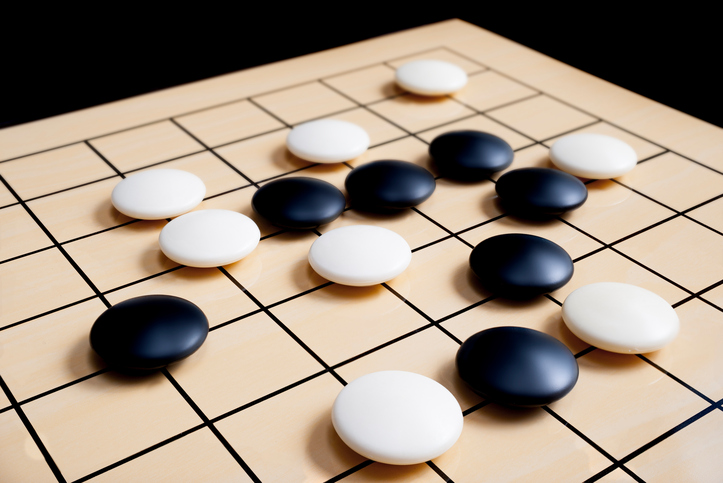
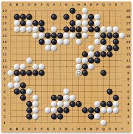

바둑은 서양의 보드 게임이다.
기본적으로 흑과 백의 진영이 있으며, 자신의 돌을 이용하여 상대방보다 더 많은 공간을 둘러쌓아야 한다.

바둑의 승리조건은 단 하나, 집을 많이 만드는 것이다. 간단히 표현해서 땅따먹기. 상대방보다 많이 만들면 이긴다. 호선일 경우는 흑을 잡은 사람이 상대방보다 7집(한국/일본), 8집(중국) 이상 더 만들어야 이긴다. 절대 돌을 많이 따먹는 게임이 아니다. 하지만, 비교적 단순한 승리조건에도 불구하고 가장 심오한 보드게임이라는 데에 별 이견이 없다. 동양의 장기에 대응하는 서양 게임은 체스가 있지만, 바둑에 대응하는 서양 게임은 없다. 바둑은 동양 고유의 보드게임이라고 할 수 있다.
1. 흑과 백을 쥔 사람이 한 수씩 번갈아 가며 둔다. 이때 선공은 무조건 흑을 쥔 사람이 한다.
2. 돌이 놓이는 위치는 선과 선이 교차하는 지점이다.
3. 선과 선이 교차하고 돌이 놓이지 않은 지점이라면 어디든지 돌을 놓을 수 있다. 단, 아래의 8~9와 같은 예외가 존재한다.
4. 일단 놓인 수는 무르거나 움직일 수 없다. 단, 온라인 대국에서는 제한적으로나마 무르기를 인정한다. 조작 실수로 엉뚱한 곳에 착수되는 경우가 있을 수 있기 때문.
5. 집(家)을 많이 지은 쪽이 이긴다.
6. 중도에 기권할 수 있다. 기권을 흔히 '돌을 던진다' 또는 '돌을 거둔다'라고 표현한다. 또한 기권승은 불계승, 기권패는 불계패로 표기한다.
7. 상대방의 돌로 둘러싸인 돌은 죽은 돌이 되며 둘러싼 쪽의 대국자가 들어내야 한다. 잡힌 돌은 계가할 때에 상대의 집을 메운다.
8. 사방이 다른 색 돌로 둘러싸인 곳에는 착수할 수 없다. 단, 둘러싼 다른 색 돌 중 끊어진 부분이 있어서 단수가 되어있을 때는 착수가 가능하다. 물론 단수가 된 그 다른 색 돌은 잡힌다.
9. 동일한 패의 형태는 반복될 수 없다. 즉, 패가 나서 자신의 돌이 잡히면 그 바로 다음 수에는 다시 잡아낼 수 없고 다른 곳에 한 번 이상 둔 후에야 다시 잡아낼 수 있다.